本次只推理，不训练。固定历史 best.pt（UNet 56 / MaxViT 200 / hybrid 36 epochs），不据目标集选权重或阈值。非统一训练预算下的架构最终排名。
| 模型 | 参数量 | 所选epoch | checkpoint SHA256 |
|---|---|---|---|
| UNet-L | 9643495 | 56 | 9ee67d2f524df34c |
| MaxViT | 40164233 | 200 | fec4e77e63b10661 |
| UNet + attention | 11938235 | 36 | a153ad8015675bd3 |
旧官方Wu20分数来自深度轴未转换的输入口径，现已通过原始轴顺序实验逐项复现。按官方约定转换到深度优先后，UNet / MaxViT / hybrid 的IoU为 0.5481 / 0.4385 / 0.5639。这是评估口径修正，不是模型升级。
混合模型域内较低、两个外部合成集较高；相位变化下下降较小，但强噪声条件并不全面领先。训练轮数不同，不能作最终架构排名。完整中文结论 · 轴顺序核验 · 独立评估一致性
| 数据 | 模型 | n | epoch | IoU | AP | P | R | 容差P | 容差R | 标签占比 |
|---|---|---|---|---|---|---|---|---|---|---|
| v2_val | UNet-L | 100 | 56 | 0.8219 | 0.9467 | 0.9061 | 0.8985 | 0.9993 | 0.9856 | 0.0348 |
| v2_val | MaxViT | 100 | 200 | 0.8207 | 0.9472 | 0.9090 | 0.8942 | 0.9988 | 0.9838 | 0.0348 |
| v2_val | UNet + attention | 100 | 36 | 0.7969 | 0.9410 | 0.8652 | 0.9099 | 0.9981 | 0.9865 | 0.0348 |
| v2_test | UNet-L | 100 | 56 | 0.8355 | 0.9566 | 0.9112 | 0.9095 | 0.9990 | 0.9921 | 0.0348 |
| v2_test | MaxViT | 100 | 200 | 0.8326 | 0.9560 | 0.9113 | 0.9060 | 0.9991 | 0.9908 | 0.0348 |
| v2_test | UNet + attention | 100 | 36 | 0.8118 | 0.9522 | 0.8730 | 0.9205 | 0.9979 | 0.9925 | 0.0348 |
| faultseg3d20 | UNet-L | 20 | 56 | 0.5481 | 0.7647 | 0.8845 | 0.5903 | 0.9967 | 0.9031 | 0.0723 |
| faultseg3d20 | MaxViT | 20 | 200 | 0.4385 | 0.6479 | 0.8788 | 0.4667 | 0.9971 | 0.7595 | 0.0723 |
| faultseg3d20 | UNet + attention | 20 | 36 | 0.5639 | 0.7858 | 0.8590 | 0.6215 | 0.9954 | 0.9161 | 0.0723 |
| wu_style_test | UNet-L | 100 | 56 | 0.6564 | 0.8703 | 0.9448 | 0.6825 | 0.9812 | 0.9622 | 0.0665 |
| wu_style_test | MaxViT | 100 | 200 | 0.6488 | 0.8649 | 0.9477 | 0.6729 | 0.9853 | 0.9549 | 0.0665 |
| wu_style_test | UNet + attention | 100 | 36 | 0.6688 | 0.8903 | 0.9272 | 0.7059 | 0.9796 | 0.9637 | 0.0665 |
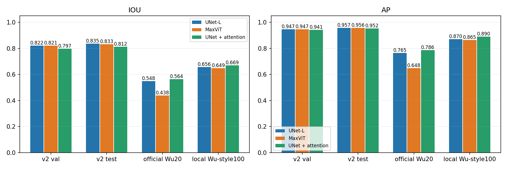
每类前5个验证体，共25个；固定标签与随机噪声。低通/相位是沿深度方向的后处理，不是重新生成地震。图中clean为同一25个体。
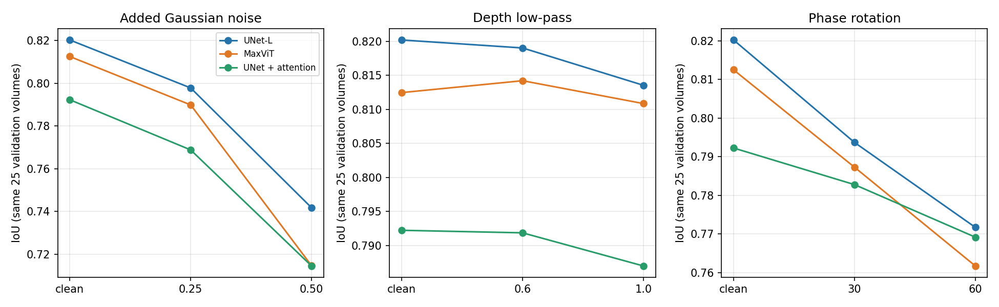
100个源验证体，低/中/高为等频分组。倾角、曲率和类别相互关联，图示为观察性关联，不证明因果。curvature为生成参数|beta_dip|+|beta_strike|均值，不是曲面的物理曲率；visible_proxy不是人工可见率。
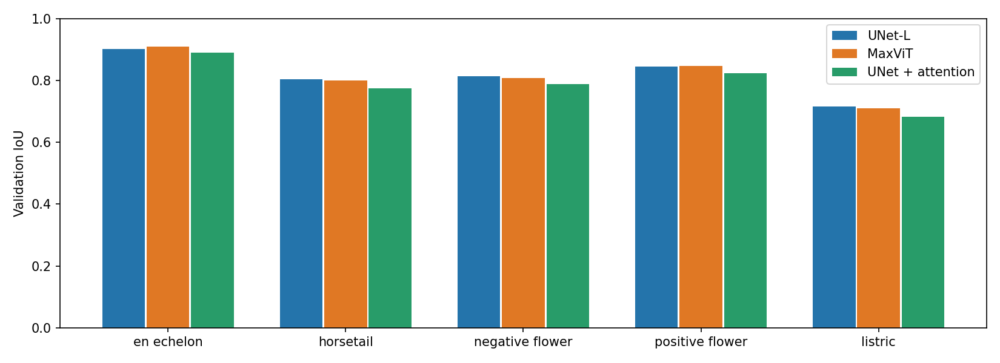
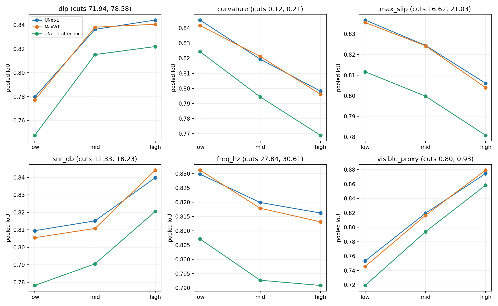
每类首个验证样本、外部前两个样本；均为y=64切片。没有按效果挑图。绿色正确检测，红色误检，蓝色漏检。
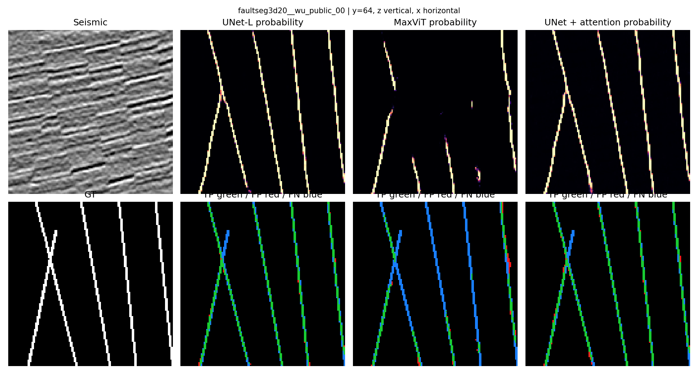
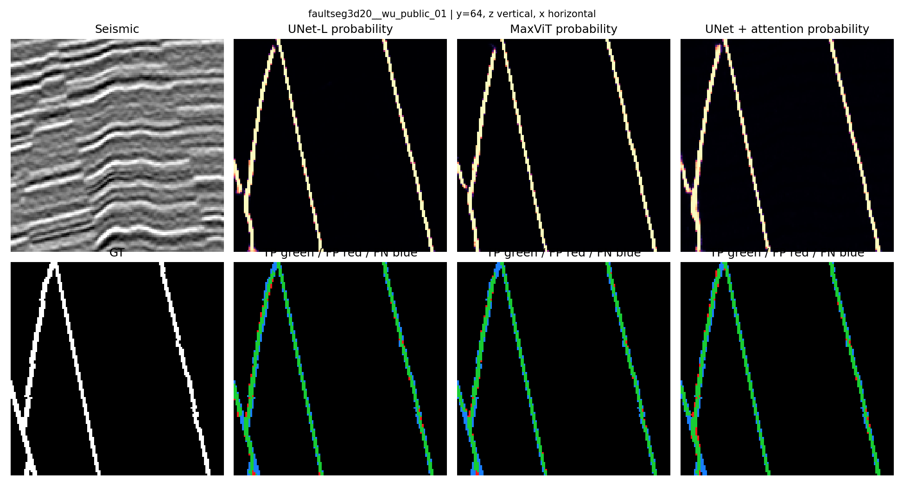
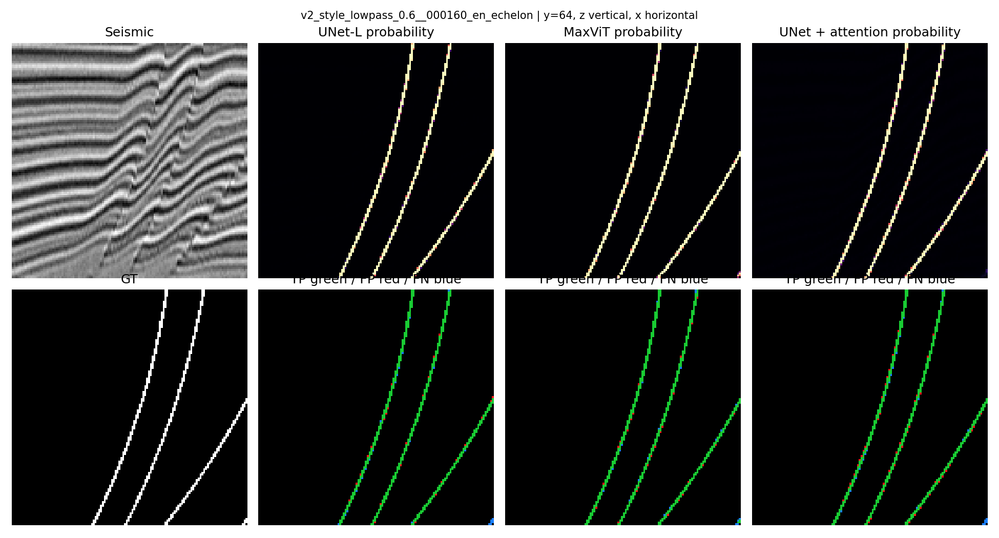
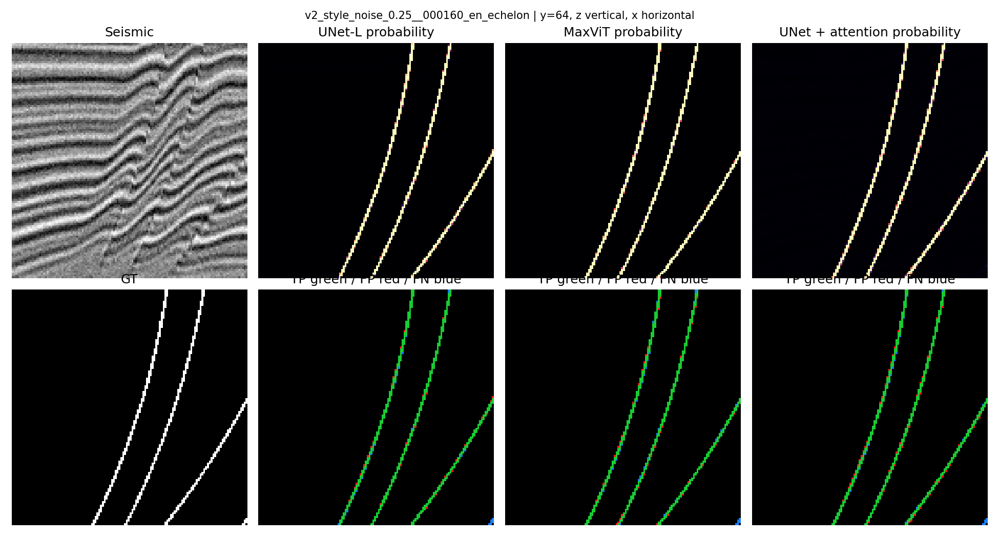
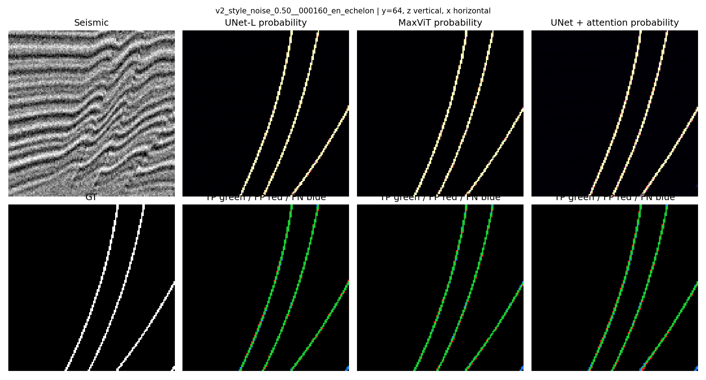
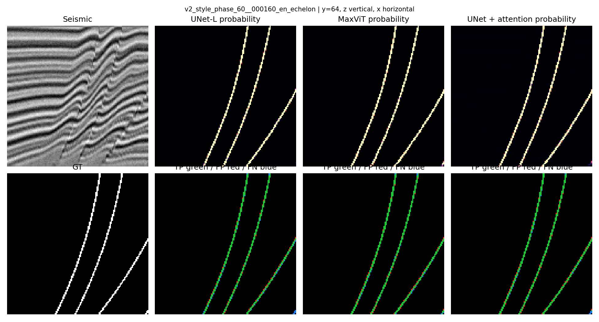
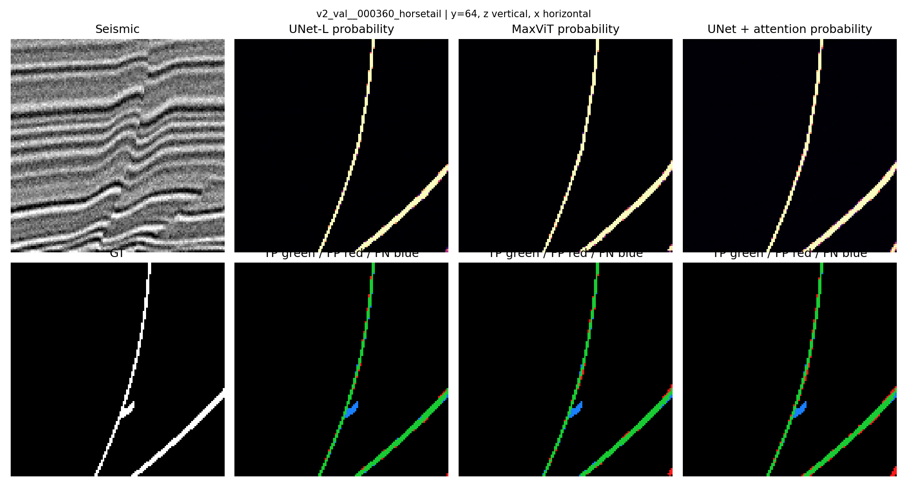
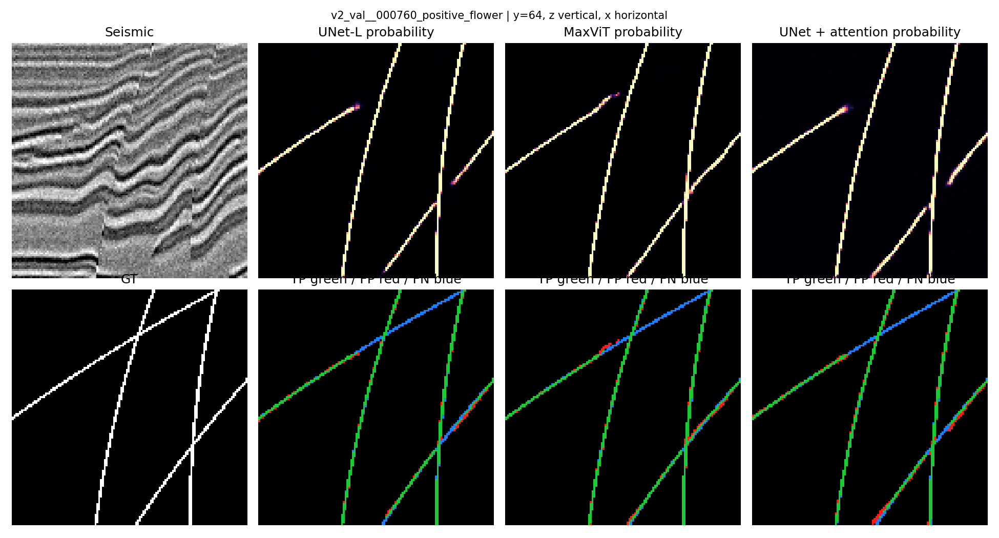
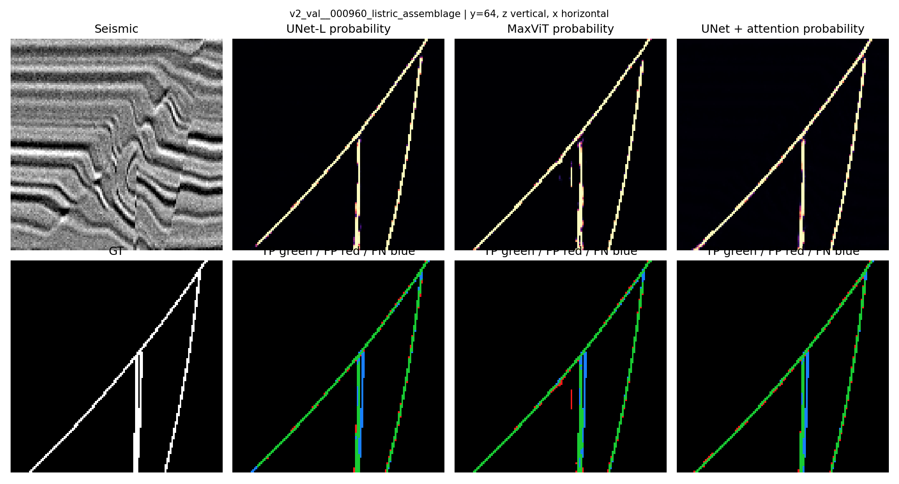
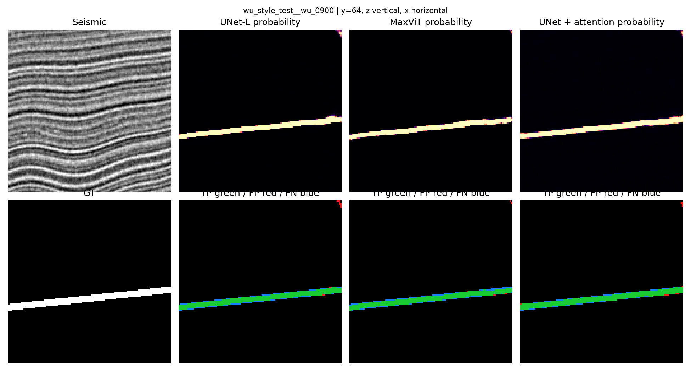
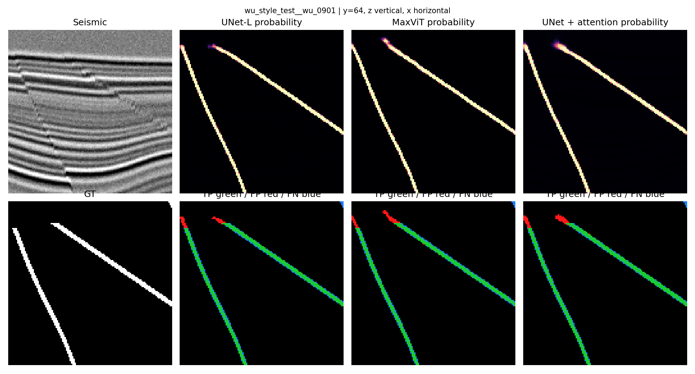
Wu20是官方合成验证数据；Wu-style100是本地生成数据，均非真实工区。本轮未做目标微调。严格IoU不膨胀标签；容差指标采用Chebyshev距离2，Precision与Recall分别按预测侧、真值侧计数。置信区间按体重采样，只反映当前权重的样本不确定性，不含训练种子不确定性。历史测试集已被查看，不称盲测。